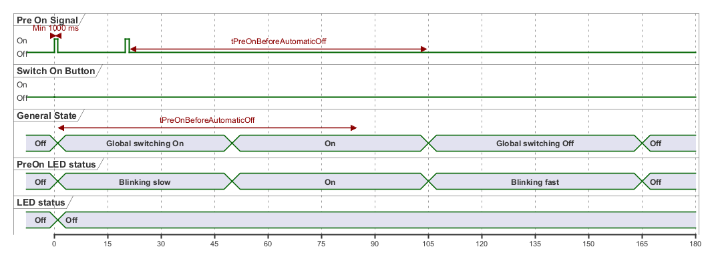

@startuml
scale 15 as 80 pixels
robust "Pre On Signal" as PreOnIn
robust "Switch On Button" as SwitchOn
concise "General State" as GeneralState
concise "PreOn LED status" as PreOnStatus
concise "LED status" as LedStatus
PreOnIn is Off
SwitchOn has On,Off
SwitchOn is Off
GeneralState is "Off"
PreOnStatus is Off
PreOnStatus is "Off"
LedStatus is "Off"
@0 as :On_Start
@1 as :On
@20 as :On_Start2
@21 as :On2
@50 as :On_Done
@60 as :Restart_Start
@104 as :Off_Start
@:Off_Start+1 as :Off
@:Off-20 as :HardOff_Start1
@:Off+35 as :HardOff_Start
@:Off+60 as :Off_Done
@:On_Start
PreOnIn is On
SwitchOn is Off
@:On
PreOnIn is Off
PreOnIn@:On_Start <-> @:On : Min 1000 ms
PreOnStatus is "Blinking slow"
GeneralState is "Global switching On"
LedStatus is "Off"
@:On_Start2
PreOnIn is On
@:On2
PreOnIn is Off
@:On_Done
PreOnStatus is "On"
GeneralState is "On"
@:Off
PreOnStatus is "Blinking fast"
GeneralState is "Global switching Off"
'DeviceStatus is "Shutting Down"
@:HardOff_Start
'DeviceStatus is "Off"
@:Off_Done
GeneralState is "Off"
GeneralState@:On <-> @:HardOff_Start1 : tPreOnBeforeAutomaticOff
PreOnIn@:On2 <-> @:Off : tPreOnBeforeAutomaticOff
PreOnStatus is "Off"
@enduml